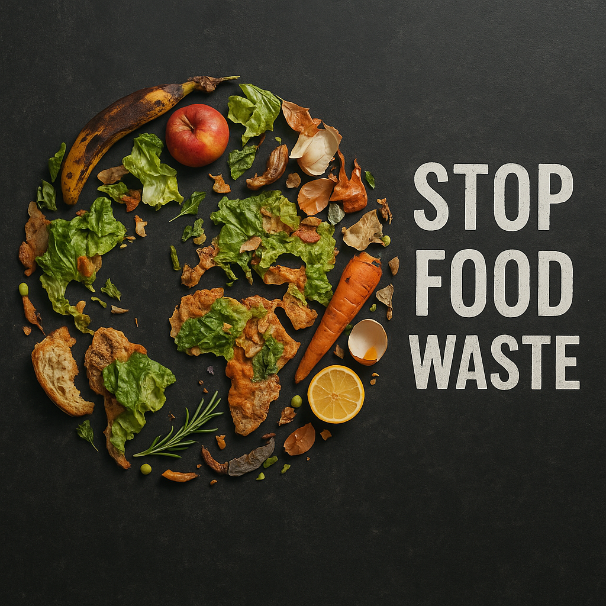
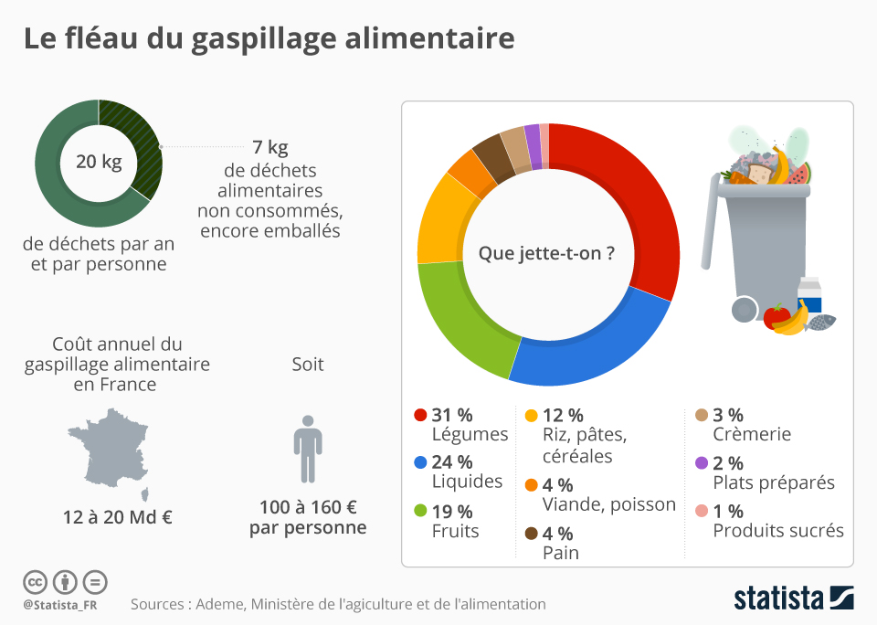

Bienvenue
Chaque année, des millions de tonnes de nourriture sont jetées inutilement. Le gaspillage alimentaire est un fléau évitable qui concerne chacun de nous.
Quelques chiffres clés
10 millions
de tonnes de nourriture gaspillées chaque année en France
1/3
de la production alimentaire mondiale est jetée
€1000
de perte moyenne par foyer par an
Impact environnemental
Le gaspillage alimentaire contribue massivement aux émissions de gaz à effet de serre. Produire des aliments inutilisés consomme de l’eau, de l’énergie, des terres agricoles et engendre des déchets inutiles.
Conseils rapides
- Planifiez vos repas à l'avance
- Comprenez les dates de péremption (DLC vs DDM)
- Cuisinez les restes de manière créative
- Stockez correctement vos aliments
- Utilisez le congélateur pour éviter les pertes